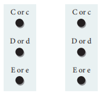
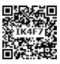
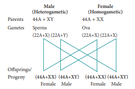
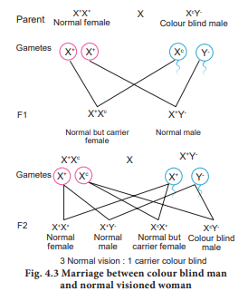
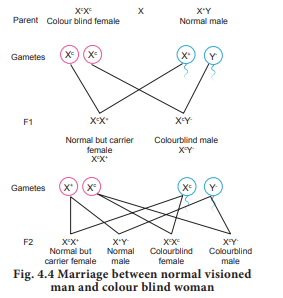
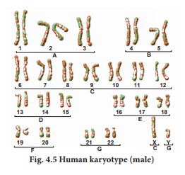
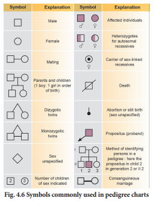
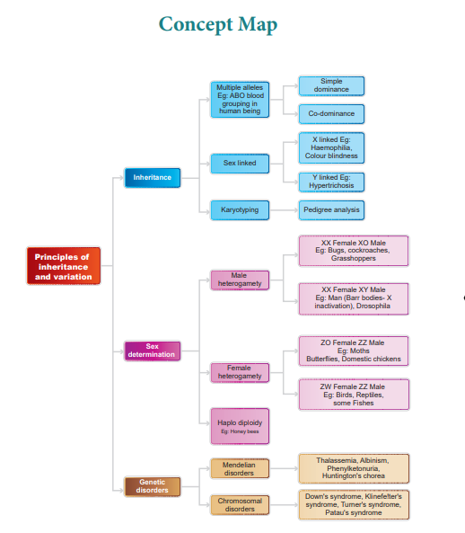

4 point 1 Multiple alleles
4 point 2 Human blood groups
4 point 3 Genetic control of Rh factor
4 point 4 Sex determination
4 point 5 Sex linked inheritance
4 point 6. Karyotyping
4 point 7. Pedigree analysis
4 point 8. Mendelian disorders
4 point 9. Chromosomal abnormalities
1. Learns the inheritance of multiple alleles with reference to human blood groups.
2. Understands the mechanism of sex determination in human beings, insects and birds.
3. Learns about sex linked (X and Y) inherited diseases in human beings.
4. Understands the Mendelian disorders and diseases associated with chromosomal abnormalities.
Genetics is a branch of biology that deals with the study of heredity and variations. It describes how characteristics and features pass on from the parents to their offsprings in each successive generation. The unit of heredity is known as the gene. Gene is the inherited factor that determines the biological character of an organism. A variation is the degree by which the progeny differs from their parents.
In this chapter, we are going to learn about multiple alleles with reference to the human blood groups, sex determination in man, insects and birds, sex linked inherited traits and genetic disorders.
The genetic segregations in Mendelian inheritance reveal that all genes have two alternative forms – dominant and recessive alleles Example tall versus dwarf (capital T and small t). The former is the normal allele or wild allele and the latter the mutant allele. A gene can mutate several times producing several alternative forms. When three or more alleles of a gene that control a particular trait occupy the same locus on the homologous chromosome of an organism, they are called multiple alleles and their inheritance is called multiple allelism.
Multiple allelism occurs in humans, particularly in the inheritance of different types of blood groups. The blood group inheritance in human can be understood by learning about antigens and antibodies. The composition of blood, different types of blood groups (A B O) the blood antigens and antibodies were discussed in chapter 7 of class eleventh.
Multiple allele inheritance of A B O blood groups
Blood differs chemically from person to person. When two different incompatible blood types are mixed, agglutination (clumping together) of erythrocytes (RBC) occurs. The basis of these chemical differences is due to the presence of antigens (surface antigens) on the membrane of RBC and epithelial cells. Karl Landsteiner discovered two kinds of antigens called antigen ‘A’ and antigen ‘B’ on the surface of RBC’s of human blood. Based on the presence or absence of these antigens three kinds of blood groups, type ‘A’, type ‘B’, and type ‘O’ (universal donor) were recognized. The fourth and the rarest blood group ‘A B’ (universal recipient) was discovered in 1902 by two of Landsteiner’s students Von De Castelle and Sturli.
Bernstein in 1925 discovered that the inheritance of different blood groups in human beings is determined by a number of multiple allelic series. The three autosomal alleles located on chromosome 9 are concerned with the determination of blood group in any person. The gene controlling blood type has been labeled as ‘L’ (after the name of the discoverer, Landsteiner) or I (from isoagglutination). The I gene exists in three allelic forms, I A, I B and I O. I A specifies A antigen. I B allele determines B antigen and I O allele specifies no antigen. Individuals who possess these antigens in their fluids such as the saliva are called secretors.
I A allele produces N-acetyl galactose transferase and can add N-acetyl galactosamine (N A G) and I B allele encodes for the enzyme galactose transferase that adds galactose to the precursor (that is., H substances) In the case of I o or I o allele no terminal transferase enzyme is produced and therefore called “null” allele and hence cannot add NAG or galactose to the precursor.
From the phenotypic combinations it is evident that the alleles IA and IB are dominant to Io, but co-dominant to each other (IA equal to IB). Their dominance hierarchy can be given as (IA equal to IB greater than IO). A child receives one of three alleles from each parent, giving rise to six possible genotypes and four possible blood types (phenotypes). The genotypes are IA IA, IA Io, lb IB, IB Io, I A, l A and I o, I o.
Antigens similar to those found among human beings have been recognized in the blood of other organisms. A-type antigens have been found in chimpanzees and in gibbons, A, B and AB antigen in orangutans.
1. New world monkeys (Platyrrhina) and lemurs have a substance similar but not identical with B antigen in humans.
2. Three blood groups have been distinguished in cats with a genetic system similar to those in humans.
3. The secretors (antigens found in the body fluids) can be detected in tears, saliva, urine, semen, gastric juice and in the milk of animals.
Table 4 point 1 Genetic basis of the human ABO blood groups
Genotype
|
ABO blood group phenotype |
Antigens present on red blood cell |
Antibodies present in blood plasma |
I A, I A |
Type A |
A |
Anti -B |
I A, I o |
Type A |
A |
Anti -B |
I B, I B |
Type B |
B |
Anti -A |
I B, I o |
Type B |
B |
Anti -A |
I A, I B |
Type AB |
A and B |
Neither Anti-A nor Anti-B |
IoIo |
Type O |
Neither A nor B |
Anti -A and anti - B |
The R h factor or R h antigen is found on the surface of erythrocytes. It was discovered in 1940 by Karl Landsteiner and Alexander Wiener in the blood of rhesus monkey, Macaca rhesus and later in human beings. The term ‘Rh factor’ refers to “immunogenic D antigen of the Rh blood group system. An individual having D antigen are Rh D positive (Rh+) and those without D antigen are Rh D negative (Rh minus)”. Rhesus factor in the blood is inherited as a dominant trait. Naturally occurring Anti D antibodies are absent in the plasma of any normal individual. However if an Rh minus (Rh negative) person is exposed to R h plus (Rh positive) blood cells (erythrocytes) for the first time, anti D antibodies are formed in the blood of that individual. On the other hand, when an Rh positive person receives Rh negative blood no effect is seen.
Rh factor involves three different pairs of alleles located on three different closely linked loci on the chromosome pair. This system is more commonly in use today, and uses the 'Cde' nomenclature.

In the above Figure. 4.1, three pairs of Rh alleles (capital C small c, capital D small d and capital E small e) occur at 3 different loci on homologous chromosome pair. The possible genotypes will be one capital C or small c, one capital D or small d, one capital E or small e from each chromosome. For Example capital C D E or small c d e; capital C small d capital E or small c capital D small e; small c, small d, small e or small c, small d, small, capital C capita D small e or capital C small d capital E excetra, All genotypes carrying a dominant ‘D’ allele will produce Rh positive phenotype and double recessive genotype ‘ small d small d’ will give rise to Rh negative phenotype.
Wiener proposed the existence of eight alleles (capital R one, capital R two, capital R power zero, capital R z, r, small r one, small r eleven, small r y) at a single R h locus. All genotypes carrying a dominant capital ‘R allele’ (capital R one, capital R two, capital R 0, capital R z) will produce R h positive phenotype and double recessive genotypes (small r small r, small r 1, small r 1, small r 11, small r11, small r small y small r small y) will give rise to R h negative phenotype.
Rh incompatability has great significance in child birth. If a woman is Rh negative and the man is Rh positive, the foetus may be Rh positive having inherited the factor from its father. The Rh-negative mother becomes sensitized by carrying Rh positive foetus within her body. Due to damage of blood vessels, during child birth, the mother’s immune system recognizes the Rh antigens and gets sensitized. The sensitized mother produces Rh antibodies. The antibodies are IgG type which are small and can cross placenta and enter the foetal circulation. By the time the mother gets sensitized and produce anti ‘D’ antibodies, the child is delivered.
Usually, no effects are associated with exposure of the mother to Rh positive antigen during the first child birth, subsequent Rh-positive children carried by the same mother, may be exposed to antibodies produced by the mother against Rh antigen, which are carried across the placenta into the foetal blood circulation. This causes haemolysis of foetal R B Cs resulting in haemolytic jaundice and anaemia. This condition is known as Erythoblastosis foetalis or Haemolytic disease of the new born (H D N).
If the mother is Rh negative and foetus is Rh positive, anti D antibodies should be administered to the mother at 28th and 34th week of gestation as a prophylactic measure. If the Rh negative mother delivers Rh positive child then anti D antibodies should be administered to the mother soon after delivery. This develops passive immunity and prevents the formation of anti D antibodies in the mothers blood by destroying the Rh foetal RBC before the mother’s immune system is sensitized. This has to be done whenever the woman attains pregnancy.
Sex determination is the method by which the distinction between male and female is established in a species. Sex chromosomes determine the sex of the individual in dioecious or unisexual organisms. The chromosomes other than the sex chromosomes of an individual are called autosomes. Sex chromosomes may be similar (homomorphic) in one sex and dissimilar (heteromorphic) in the other. Individuals having homomorphic sex chromosomes produce only one type of gametes (homogametic) whereas heteromorphic individuals produce two types of gametes (heterogametic).
Y CHROMOSOME
The human Y chromosome is only 60 Mb in size with 60 functional genes whereas X chromosomes are 165 Mb in size with about 1,000 genes.
Heterogametic Sex Determination:

In heterogametic sex determination one of the sexes produces similar gametes and the other sex produces dissimilar gametes. The sex of the offspring is determined at the time of fertilization.
Heterogametic Males
In this method of sex determination the males are heterogametic producing dissimilar gametes while females are homogametic producing similar gametes. It is of two kinds XX-XO type (Example Bugs, cockroaches and grasshoppers) and XX-XY type (Example Human beings and Drosophila).
Heterogametic Females
In this method of sex determination the females are heterogametic producing dissimilar gametes while males are homogametic producing similar gametes. To avoid confusion with the XX-Xo and XX-XY types of sex determination, the alphabets ‘ejet’ and ‘W’ are used here instead of X and Y respectively. Heterogametic females are of two types, ejet, O – ejet, ejet type (example. Moths, butterflies and domestic chickens) and ejet, W ejet, ejet type (example. Gypsy moth, fishes, reptiles and birds).
Genes determining sex in human beings are located on two sex chromosomes, called allosomes. In mammals, sex determination is associated with chromosomal differences between the two sexes, typically XX females and XY males. 23 pairs of human chromosomes include 22 pairs of autosomes (44 A) and one pair of sex chromosomes (XX or XY). Females are homogametic producing only one type of gamete (egg), each containing one X chromosome while the males are heterogametic producing two types of sperms with X and Y chromosomes. An independently evolved XX: XY system of sex chromosomes also exist in Drosophila (Figure 4 point 2).

Current analysis of Y chromosomes has revealed numerous genes and regions with potential genetic function; some genes with or without homologous counterparts are seen on the X. Present at both ends of the Y chromosome are the pseudo autosomal regions (P A Rs) that are similar with regions on the X chromosome which synapse and recombine during meiosis. The remaining 95% of the Y chromosome is referred as the Non - combining Region of the Y (N R Y). The NRY is divided equally into functional genes (euchromatic) and non functional genes (heterochromatic). Within the euchromatin regions, is a gene called Sex determining region Y (S R Y). In humans, absence of Y chromosome inevitably leads to female development and this S R Y gene is absent in X chromosome. The gene product of SRY is the testes determining factor (T D F) present in the adult male testis.
Box item
1. X-Chromosome was discovered by Henking (1891)
2. Y-Chromosome was discovered by Stevens (1902)
In 1949, Barr and Bertram first observed a condensed body in the nerve cells of female cat which was absent in the male. This condensed body was called sex chromatin by them and was later referred as Barr body. In the X Y chromosomal system of sex determination, males have only one X chromosome, whereas females have two. A question arises: how does the organism compensate for this dosage differences between the sexes? In mammals the necessary dosage compensation is accomplished by the inactivation of one of the X chromosome in females so that both males and females have only one functional X chromosome per cell.
Mary Lyon suggested that Barr bodies represented an inactive chromosome, which in females becomes tightly coiled into a heterochromatin, a condensed and visible form of chromatin (Lyon’s hypothesis). The number of Barr bodies observed in cell was one less than the number of X-Chromosome. X O females have no Barr body, whereas X X Y males have one Barr body.
The number of Barr bodies follows N-1 rule (N minus one rule), where N is the total number of X chromosomes present.
Haplodiploidy in Honeybees
In hymenopteran insects such as honeybees, ants and wasps a mechanism of sex determination called haplodiploidy mechanism of sex determination is common. In this system, the sex of the offspring is determined by the number of sets of chromosomes it receives. Fertilized eggs develop into females (Queen or Worker) and unfertilized eggs develop into males (drones) by parthenogenesis. It means that the males have half the number of chromosomes (haploid) and the females have double the number (diploid), hence the name haplodiplody for this system of sex determination.
This mode of sex determination facilitates the evolution of sociality in which only one diploid female becomes a queen and lays the eggs for the colony. All other females which are diploid having developed from fertilized eggs help to raise the queen’s eggs and so contribute to the queen’s reproductive success and indirectly to their own, a phenomenon known as Kin Selection. The queen constructs their social environment by releasing a hormone that suppresses fertility of the workers.
The inheritance of a trait that is determined by a gene located on one of the sex chromosomes is called sex linked inheritance. Genes present on the differential region of X or Y chromosomes are called sex linked genes. The genes present in the differential region of “X” chromosome are called X linked genes. The X–linked genes have no corresponding alleles in the Y chromosome. The genes present in the differential region of Y chromosome are called Y- linked holandric genes. The Y linked genes have no corresponding allele in X chromosome. The Y linked genes inherit along with Y chromosome and they phenotypically express only in the male sex. Sex linked inherited traits are more common in males than females because, males are hemizygous and therefore express the trait when they inherit one mutant allele. The X – linked and Y – linked genes in the differential region (non–homologus region) do not undergo pairing or crossing over during meiosis. The inheritance of X or Y linked genes is called sex-linked inheritance.
Red-green colour blindness or daltonism, haemophilia and Duchenne’s muscular dystrophy are examples of X-linked gene inheritance in humans.
Haemophilia is commonly known as bleeder’s disease, which is more common in men than women. This hereditary disease was first reported by John Cotto in 1803. Haemophilia is caused by a recessive X-linked gene. A person with a recessive gene for haemophilia lacks a normal clotting substance (thromboplastin) in blood, hence minor injuries cause continuous bleeding, leading to death. The females are carriers of the disease and would transmit the disease to 50% of their sons even if the male parent is normal. Haemophilia follows the characteristic criss - cross pattern of inheritance.
In human beings a dominant X – linked gene is necessary for the formation of colour sensitive cells, the cones. The recessive form of this gene is incapable of producing colour sensitive cone cells. Homozygous recessive females (XcXc) and hemizygous recessive males (XcY) are unable to distinguish red and green colour. The inheritance of colour blindness can be studied in the following two types of marriages.
A marriage between a colour blind man and a normal visioned woman will produce normal visioned male and female individuals in F1 generation but the females are carriers. The marriage between a F1 normal visioned carrier woman and a normal visioned male will produce one normal visioned female, one carrier female, one normal visioned male and one colour blind male in F2 generation. Colour blind trait is inherited from the male parent to his grandson through carrier daughter, which is an example of criss-cross pattern of inheritance (Figure 4 point 3).

If a colour blind woman (XcXc) marries a normal visioned male (X+Y), all F1 sons will be colourblind and daughters will be normal visioned but are carriers. Marriage between F 1 carrier female with a colour blind male will produce normal visioned carrier daughter, colourblind daughter, normal visioned son and a colourblind son in the F 2 generation (Figure. 4 point 4).

Genes in the non-homologous region of the Y-chromosome are inherited directly from male to male. In humans, the Y-linked or holandric genes for hypertrichosis (excessive development of hairs on pinna of the ear) are transmitted directly from father to son, because males inherit the Y chromosome from the father. Female inherits only X chromosome from the father and are not affected.
Karyotyping is a technique through which a complete set of chromosomes is separated from a cell and the chromosomes are arranged in pairs. An idiogram refers to a diagrammatic representation of chromosomes.
Tjio and Levan (1960) described a simple method of culturing lymphocytes from the human blood. Mitosis is induced followed by addition of colchicine to arrest cell division at metaphase stage and the suitable spread of metaphase chromosomes is photographed. The individual chromosomes are cut from the photograph and are arranged in an orderly fashion in homologous pairs. This arrangement is called a karyotype. Chromosome banding permits structural definitions and differentiation of chromosomes.
1. It helps in gender identification.
2. It is used to detect the chromosomal aberrations like deletion, duplication, translocation, nondisjunction of chromosomes.
3. It helps to identify the abnormalities of chromosomes like aneuploidy.
4. It is also used in predicting the evolutionary relationships between species.
5. Genetic diseases in human beings can be detected by this technique.

Depending upon the position of the centromere and relative length of two arms, human chromosomes are of three types: Metacentric, sub metacentric and acrocentric. The photograph of chromosomes are arranged in the order of descending length in groups from A to G (Fig. 4.5).
Pedigree is a “family tree”, drawn with standard genetic symbols, showing the inheritance pathway for specific phenotypic characters.(Fig. 4.6). Pedigree analysis is the study of traits as they have appeared in a given family line for several past generations.

A genetic disorder is a disease or syndrome that is caused by an abnormality in an individual DNA. Abnormalities can range from a small mutation in a single gene to the addition or subtraction of an entire chromosome or even a set of chromosomes. Genetic disorders are of two types namely, Mendelian disorders and chromosomal disorders.
Alteration or mutation in a single gene causes Mendelian disorders. These disorders are transmitted to the offsprings on the same line as the Mendelian pattern of inheritance. Some examples for Mendelian disorders are Thalassemia, albinism, phenylketonuria, sickle cell anaemia, Huntington's chorea, etc., These disorders may be dominant or recessive and autosomal or sex linked.
Thalassemia is an autosomal recessive disorder. It is caused by gene mutation resulting in excessive destruction of RBC’s due to the formation of abnormal haemoglobin molecules. Normally haemoglobin is composed of four polypeptide chains, two alpha and two beta globin chains. Thalassemia patients have defects in either the alpha or beta globin chain causing the production of abnormal haemoglobin molecules resulting in anaemia.
Thalassemia is classified into alpha and beta based on which chain of haemoglobin molecule is affected. It is controlled by two closely linked genes HBA1 and HBA2 on chromosome 16. Mutation or deletion of one or more of the four alpha gene alleles causes Alpha Thalassemia. In Beta Thalassemia, production of beta globin chain is affected. It is controlled by a single gene (HBB) on chromosome 11. It is the most common type of Thalassemia and is also known as Cooley’s anaemia. In this disorder the alpha chain production is increased and damages the membranes of RBC.
It is an inborn error of Phenylalanine metabolism caused due to a pair of autosomal recessive genes. It is caused due to mutation in the gene PAH (phenylalanine hydroxylase gene) located on chromosome 12 for the hepatic enzyme “phenylalanine hydroxylase” This enzyme is essential for the conversion of phenylalanine to tyrosine. Affected individual lacks this enzyme, so phenylalanine accumulates and gets converted to phenylpyruvic acid and other derivatives. It is characterized by severe mental retardation, light pigmentation of skin and hair. Phenylpyruvic acid is excreted in the urine.
Phenylalanine in the presence of phenylalanine hydroxylase gives Tyrosine
Albinism is an inborn error of metabolism, caused due to an autosomal recessive gene. Melanin pigment is responsible for skin colour. Absence of melanin results in a condition called albinism. A person with the recessive allele lacks the tyrosinase enzyme system, which is required for the conversion of dihydroxyphenyl alanine (DOPA) into melanin pigment inside the melanocytes. In an albino, melanocytes are present in normal numbers in their skin, hair, iris, etc., but lack melanin pigment.
3,4 dihydroxy Phenylalanine in the presence of Tyrosine gives Melenin
It is inherited as an autosomal dominant lethal gene in man. It is characterized by involuntary jerking of the body and progressive degeneration of the nervous system, accompanied by gradual mental and physical deterioration. The patients with this disease usually die between the age of 35 and 40.
Each human diploid (2n) body cell has 46 chromosomes (23 pairs). Chromosomal disorders are caused by errors in the number or structure of chromosomes. Chromosomal anomalies usually occur when there is an error in cell division. Failure of chromatids to segregate during cell division resulting in the gain or loss of one or more chromosomes is called aneuploidy. It is caused by nondisjunction of chromosomes. Group of signs and symptoms that occur together and characterize a particular abnormality is called a syndrome. In humans, Down’s syndrome, Turner’s syndrome, Klinefelter's syndrome, Patau’s syndrome are some of the examples of chromosomal disorders.
Several autosomal aneuploidies have been reported in human beings. example. Down’s syndrome (21-Trisomy), Patau’s syndrome (13-Trisomy).
Trisomic condition of chromosome - 21 results in Down’s syndrome. It is characterized by severe mental retardation, defective development of the central nervous system, increased separation between the eyes, flattened nose, ears are malformed, mouth is constantly open and the tongue protrudes.
Trisomic condition of chromosome 13 results in Patau’s syndrome. Meiotic non disjunction is thought to be the cause for this chromosomal abnormality. It is characterized by multiple and severe body malformations as well as profound mental deficiency. Small head with small eyes, cleft palate, malformation of the brain and internal organs are some of the symptoms of this syndrome.
Mitotic or meiotic non-disjunction of sex chromosomes causes allosomal abnormalities. Several sex chromosomal abnormalities have been detected. Example. Klinefelter’s syndrome and Turner’s syndrome.
This genetic disorder is due to the presence of an additional copy of the X chromosome resulting in a karyotype of 47, X X Y. Persons with this syndrome have 47 chromosomes (44 A A plus X X Y). They are usually sterile males, tall, obese, with long limbs, high pitched voice, under developed genitalia and have feeble breast (gynaecomastia) development.
This genetic disorder is due to the loss of a X chromosome resulting in a karyotype of 45 X. Persons with this syndrome have 45 chromosomes (44 autosomes and one X chromosome) (44 A A plus X O) and are sterile females. Low stature, webbed neck, under developed breast, rudimentary gonads lack of menstrual cycle during puberty, are the main symptoms of this syndrome.
Genetics is a branch of biology that deals with the study of heredity and variation. It describes how characteristics and features pass on from the parents to their off springs in successive generations. Variation is the degree by which progeny differ from their parents. A set of three or more alleles of the same gene occupying the same locus in a given pair of homologous chromosomes controlling a particular trait is called Multiple allele. A B O blood grouping in man is a good example for multiple allelism. Apart from A and B antigens, the R B C’s of humans contain a special type of antigen called Rh antigen (or) Rh factors. Erythroblastosis foetalis, also called haemolytic disease of the newborn, in which the red blood cells of a foetus are destroyed due to maternal immune reaction resulting from a blood group incompatibility between the foetus and the mother.
The mechanism of determination of male and female individuals in a species is called sex determination. The chromosomes are different in two sexes and referred to as allosomes; the remaining chromosomes are named autosomes. The inheritance of a trait that is determined by a gene located on one of the sex chromosomes is called sex linked inheritance. Haemophilia, colourblindness, muscular dystrophy are some examples for X linked inheritance in human beings.
Pedigree analysis is the study of traits as they have appeared in a given family line for several generations. The genetic disorders are of two types- Mendelian and chromosomal. Alternations or mutation in single gene causes Mendelian disorders like, thalassemia, albinism, phenylketonuria, and Huntington’s chorea. Chromosomal abnormalities arise due to chromosomal non-disjunction, translocation, deletion, duplication and inversion. Downs syndrome, Klinefelter’s syndrome, Turner’s syndrome and Patau’s syndrome are some of the chromosomal disorders. Downs syndrome is due to trisomy of chromosome 21. Presence of trisomic condition of chromosome 13 results in Patau’s syndrome. In Turner’s syndrome the sex chromosome is X O and in Klinefelter’s syndrome the condition is X X Y. An idiogram refers to a diagrammatic representation of chromosomes.
1. Haemophilia is more common in males because it is a
a) Recessive character carried by Y-chromosome
b) Dominant character carried by Y-chromosome
c) Dominant trait carried by X-chromosome
d) Recessive trait carried by X-chromosome
Answer: d) Recessive trait carried by X-chromosome
2. ABO blood group in man is controlled by
a) Multiple alleles
b) Lethal genes
c) Sex linked genes
d) Y-linked genes
Answer: a) Multiple alleles
3. Three children of a family have blood groups A, AB and B. What could be the genotypes of their parents?
a) I A, I B and Io I o
b) I A, I o and I B, I o
c) I B, I B and I A, I A
d) I A, I A and Io I o
Answer: b) I A, I o and I B, I o
4. Which of the following is not correct?
a) Three or more alleles of a trait in the population are called multiple alleles.
b) A normal gene undergoes mutations to form many alleles.
c) Multiple alleles map at different loci of a chromosome.
d) A diploid organism has only two alleles out of many in the population.
Answer: c) Multiple alleles map at different loci of a chromosome.
5. Which of the following phenotypes in the progeny are possible from the parental combination A cross B?
a) A and B only
b) A, B and A B only
c) A B only
d) A, B, A B and O
answer: d) A, B, A B and O
6. Which of the following phenotypes is not possible in the progeny of the parental genotypic combination I A, I O, cross I A, I B?
a) A B
b) O
c) A
d) B
Answer: b) O
7. Which of the following is true about Rh factor in the offspring of a parental combination D d into D d (both Rh positive)?
a) All will be Rh positive
b) Half will be Rh positive
c) About three fourth will be Rh negative
d) About one fourth will be Rh negative
Answer: d) About one fourth will be Rh negative
8. What can be the blood group of offspring when both parents have AB blood group?
a) A B only
b) A, B and A B
c) A, B, A B and O
d) A and B only
Answer: b) A, B and A B
9. If the childs blood group is ‘O’ and fathers blood group is ‘A’ and mother’s blood group is ‘B’ the genotype of the parents will be
a) I A, I A and I B, I o
b) I A, I o and I B, I o
c) I A, I o and I o, I o
d) Io, Io and IB IB
Answer: b) IA Io and IB Io
10. X O type of sex determination and X Y type of sex determination are examples of
a) Male heterogamety
b) Female heterogamety
c) Male homogamety
d) Both (b) and (c)
Answer: a) Male heterogamety
11. In an accident there is great loss of blood and there is no time to analyse the blood group which blood can be safely transferred?
a) O and R h negative
b) O and R h positive
c) B and R h negative
d) A B and R h positive
Answer: a) O and R h negative
12. Father of a child is colourblind and mother is carrier for colourblindness, the probability of the child being colourblind is
a) 25 percentage
b) 50 percentage
c) 100 percentage
d) 75 percentage
Answer: b) 50 percentage
13. A marriage between a colour blind man and a normal woman produces
a) All carrier daughters and normal sons
b) 50 percentage carrier daughters and 50 percentage normal daughters
c) 50 percentage colour blind sons and 50 percentage normal sons
d) All carrier offspring
Answer: a) All carrier daughters and normal sons
14. Down’s syndrome is a genetic disorder which is caused by the presence of an extra chromosome number
a) 20
b) 21
c) 4
d) 23
Answer: b) 21
15. Klinefelters’ syndrome is characterized by a karyotype of
a) X Y Y
b) X O
c) X X X
d) X X Y
Answer: d) X X Y
16. Females with Turners’ syndrome have
a) Small uterus
b) Rudimentary ovaries
c) Underdeveloped breasts
d) All of these
Answer: d) All of these
17. Pataus’ syndrome is also referred to as
a) 13 Trisomy
b) 18 Trisomy
c) 21 Trisomy
d) None of these
Answer: a) 13 Trisomy
18. “Universal Donor” and “Universal Recipients” blood group are dash and dash respectively
a) A B, O
b) O, A B
c) A, B
d) B, A
Answer: b) O, A B
19. ejet W, ejet ejet system of sex determination occurs in
a) Fishes
b) Reptiles
c) Birds
d) All of these
Answer: d) All of these
20. Co-dominant blood group is
a) A
b) A B
c) B
d) O
Answer: b) A B
21. Which of the following is incorrect regarding ejet W ejet, ejet type of sex determination?
a) It occurs in birds and some reptiles
b) Females are homogametic and males are heterogametic
c) Males produce one types of gamete
d) It occurs in gypsy moth
Answer: b) Females are homogametic and males are heterogametic
22. What is haplodiploidy?
23. Distinguish between heterogametic and homogametic sex determination systems.
24. What is Lyonisation?
25. What is criss-cross inheritance?
26. Why are sex linked recessive characters more common in the male human beings?
27. What are holandric genes?
28. Mention the symptoms of Phenylketonuria.
29. Mention the symptoms of Down's syndrome.
30. Explain the genetic basis of ABO blood grouping in man.
31. How is sex determined in human beings?
32. What is male heterogamety?
33. Brief about female heterogamety.
34. Give an account of genetic control of Rh factor.
35. Explain the mode of sex determination in honeybees.
36. What are the applications of Karyotyping?
37. Explain the inheritance of sex linked characters in human being.
